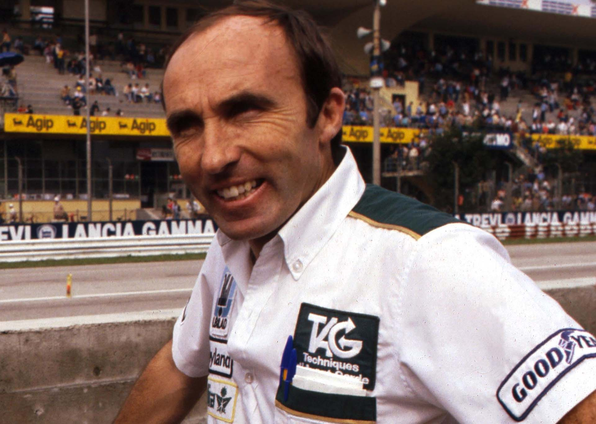
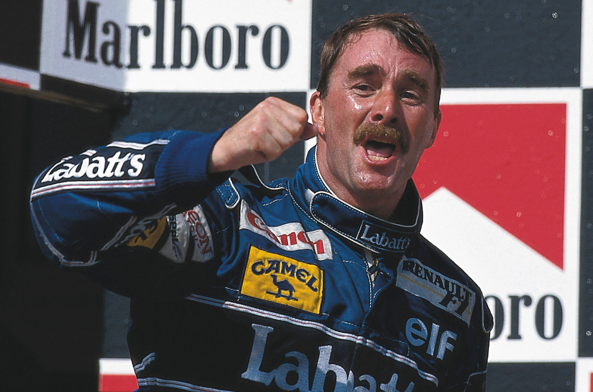
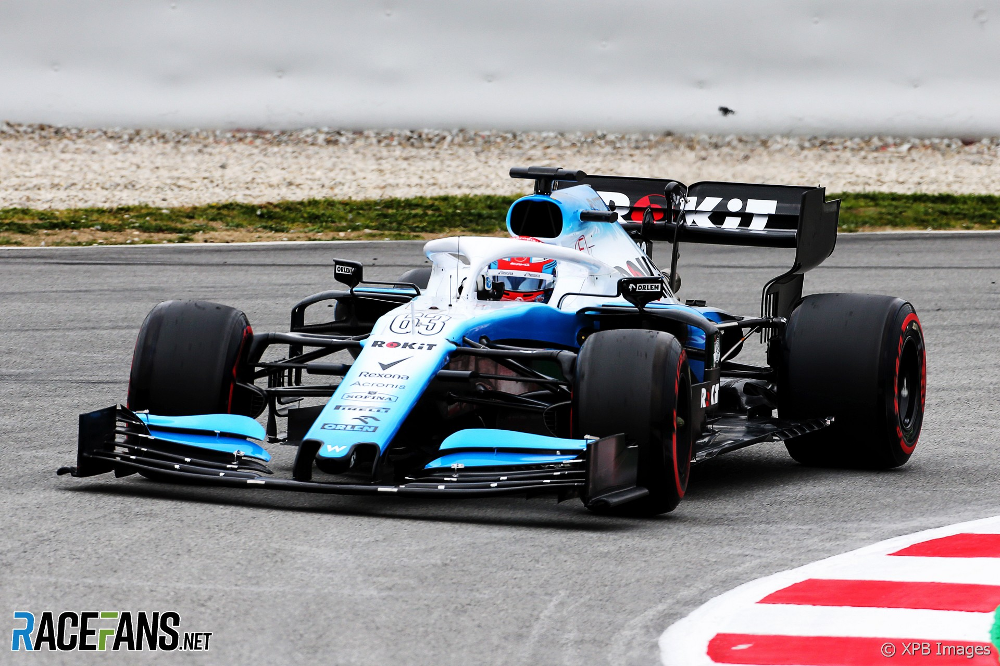

Williams Racing

The History of Williams
Williams Racing was founded back in 1977 by Frank Williams and Patrick Head. They debuted at the 1977 Spanish Grand Prix and have since won 7 WDC and 9 WCC.
Frank Williams
Frank founded Williams Racing after his previous team Frank Williams Racing Cars failed to be competitive. He stepped down from the board of Williams F1 in 2012 and was replaced by his daughter Claire but he stayed with the team as team principle until the team was sold in 2020. Frank used a wheelchair following a car accident in 1986 meaning he was rendered tetraplegic.
Early Success
In their forth year in Formula 1, Williams won the constructors and drivers championships with Alan Jones. They won the constructors the next year, 1981, and the drivers in 1982 with Keke Rosberg all with Cosworth power.

Honda Turbo Engines
A switch to Honda turbo engines took a while to come good but it delivered in a big way in the mid 80s when Nelson Piquet and Nigel Mansell were driving. Williams won back-to-back constuctors titles in 1986 and 1987 and Piquet even won the drivers in the later year.

90s domination and Ayrton Senna
Mansell returned in 1991 and dominated in the FW14B which pineered technology such as active suspension. They won the constuctors and drivers in 1992 and 1993 with Mansell winning the first and new arrival Alain Prost winning the second. However, in 1994 Ayrton Senna joined the team but was tragically in the third race of the season. The team won 2 more WDC and WCC in 1996 and 1997 with Damon Hill and Jacques Villeneuves respectively.
Downfall
With a mix of bad partnerships and engines the teams stopped winning championships and eventually races, their last race win was in 2012 with Pastor Maldonado. In 2019 their car wasn't even ready for testing and only scored 1 point that season. In 2020 they came last for the third year running and with the pressures of COVID-19 the Williams family sold the team halfway through the season to Dorilton Capital.
Recent Redemption
In recent years with team principle James Vowels the team has been performing better; 8th in 2021 and 7th in 2023. This year has been even better though, they are currently 5th in the standings and have 2 skilled and experienced drivers, Alex Albon and Carlos Sainz, so the furtre of Williams Racing looks bright.